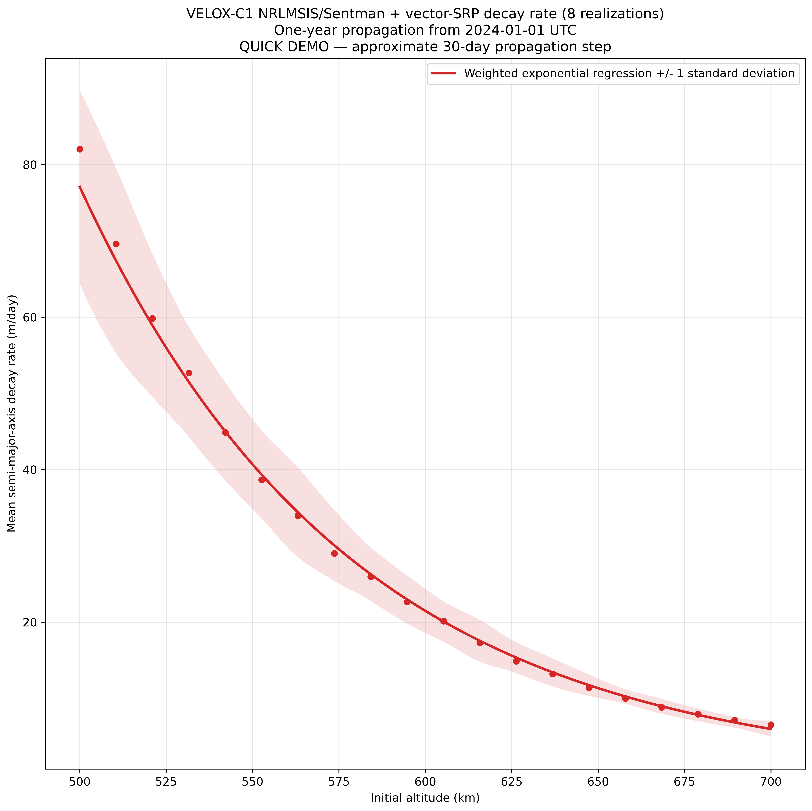

{kind=link}
Thermosphere
NRLMSIS 2.1 supplies density, temperature, and neutral species from epoch, position, F10.7, centred F10.7, and storm-time Ap.
Interactive research instrument · VELOX-C1
Configure a launch epoch and altitude interval, then generate a publication-resolution line graph or solar-cycle heat map.
Result

Quick-demo figures are explicitly labelled and are intended for interface evaluation. Disable Quick demo for the 200-realization, three-hour-step scientific profile.
Physical methodology
Atmospheric state, gas-surface interaction, orbital geometry, and uncertainty are evaluated together at each propagation interval.
NRLMSIS 2.1 supplies density, temperature, and neutral species from epoch, position, F10.7, centred F10.7, and storm-time Ap.
Sentman/DRIA drag responds to species composition, temperature, atomic-oxygen adsorption, accommodation, geometry, and wind.
Drag is combined with vector solar-radiation pressure, finite-disc eclipses, inverse-square solar scaling, and J2 secular evolution.
Correlated atmospheric, forecast, neutral-wind, density-model, and gas-surface discrepancies propagate through each trajectory.
Python application hosting
Start the FastAPI service locally or deploy the included container. One numerical worker runs jobs sequentially to protect shared model configuration.
python3 -m venv .venv
source .venv/bin/activate
python -m pip install -e .
python run_web.py